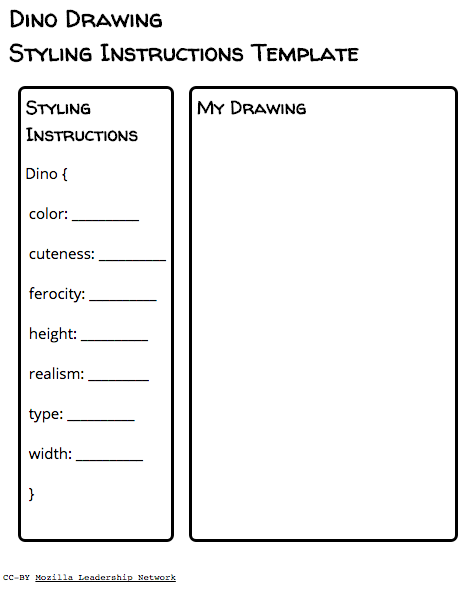

Intermediate Web Literacy I | CSS Word Pyramid
Made by Mozilla, released under the CC-BY-SA license
60 minutes
Learners will use CSS to change the size of text on an HTML webpage, learning about coding, composing, and desinging.
Web Literacy Skills
21st Century Skills
Learning Objectives
- Understand and be able to explain the connection between an HTML webpage and a CSS stylesheet.
- Change the size of text on an HTML webpage using selectors and values on a CSS stylesheet.
Audience
- 13+
- Intermediate web users
Materials
- Internet-connected computers
- Markers
- Dino drawing styling instructions template
Check out the ways educators and activists have modified this activity for their specific audiences in our Discussion Forum.
-
1. Preparation
Do the activity on your own to become familiar with how to find and use webfonts on a webpage.
- Follow this link to the Thimble project for this activity.
- Click on the green "Remix" button in the upper right-hand corner of the window to go into the project's code.
- Click on the "Tutorial" pane next to the "Preview" pane in the upper right-hand corner of the coding window.
- Follow the steps in the tutorial to complete the activity. You may also need to check back here and complete some of the steps in this lesson plan to successfully finish the Thimble project.
Post the URL, or Web address, of today's project somewhere highly visible in your room. You may want to post it as a shortened link using a service like bit.ly.
Customize and print copies of the dino drawing styling instructions template for students to use in today's activity.
Note that you can remix this template in Thimble, Mozilla's online code editor, to tailor the subject ('Dino Drawing') and styling instructions (e.g. 'ferocity') for your classroom and community. Visit the link and click on the green 'Remix' button. After you make your changes, you can publish your own version of the project and print it.
-
2. Drawing Dinos
25 minutesHelp students understand the concept of styling instructions by exchanging directions for drawing and coloring a dinosaur (or any other theme or thing that best fits your community).
- Gather students together for today's participatory prompt.
- Explain that we're going to learn how cascading stylesheets - or CSS - give webpages instructions on how to display all their different parts. In other words, we're going to learn how CSS makes a webpage look like it does.
- Tell students that in order to visualize how CSS instructions work, we're going to make up and share some drawing instructions of our own.
- Hand out copies of the styling instructions template and invite students to grab markers if they need drawing utensils.
 - Give students about 5 minutes to complete their instructions. Students can use whatever values they want for the instructions on the template. For example, for the
ferocityproperty, a student could write anyting from-999to lots tono. The idea is just to provide guidelines a partner can understand and use. There is no set format for values here. You might suggest that therealismvalue be kept aslowso as many students as possible feel comfortable tackling the drawing portion of this activity. - Use an equitable method to have students swap instruction templates with partners.
- Give students 10-15 minutes to draw a dinosaur using their partners' styling instructions. You may want to provide blank dinosaur templates for coloring or allow students to search for dinosaur pictures that fit their partners' styling instructions. This will help students who experience difficulty drawing to engage with and learn from the activity in a complementary way.
- After time is up, have students post their templates and drawings on a shared space in the classroom like a whiteboard or empty wall.
- Take another 5 minutes to do a gallery walk and invite learners to see each other's work and look at how their drawings and styling instructions are connected.
- Once students have had a chance to complete their gallery walks, gather the group back together and facilitate a brief 5 minute discussion about what seemed easiest and most difficult in both coming up with directions and following them while drawing.
- When conversation winds down, invite students to take their seats at computers.
-
3. Reversing a Word Pyramid with CSS
30 minutesOnce students have made it back to their computers, explain that today we'll be tackling our first intermediate web literacy lesson - the 'CSS Pyramid.' We're going to learn what CSS is and how it works with HTML before using some CSS code to change the size of text on a webpage.
In short, we're going to see how stylesheets give webpages and browsers instructions about what to display - or 'draw' - on screen.
Share the link to today's project with students. You might want to shorten this link ahead of time or else provide a link to it from a classwebpage or shared document. Help students who experience difficulty with processing or typing links get to the webpage and encourage classmates to help, as well.
Once students all arrive at the project, invite them to click the green 'Remix' button. This will take students into the Thimble code editor. They will be ableto see the code of the webpage, as well as a preview of how it looks in a browser. Students can also switch between this 'Preview' pane (in the upper righthand part of the Thimble interface) and a 'Tutorial' pane that takes them through today's work in a step-by-step way.
Work through the tutorial on a projected computer. Invite students to help one another, but also to work ahead if they feel ready to do so. Through the course of the tutorial, you'll ask students to:
- Learn what CSS is.
- Explore how CSS styling impacts the way elements display on an HTML webpage.
- Use CSS to change the size of text displayed on a webpage so that a right-side-up 'pyramid' of words looks upside down instead.
Mess with the code to discover new ways to style parts of a webpage in an independent and playful way.
4. Reflection and Assessment
After working through the tutorial, bring students back together as a group and facilitate a brief, reflective conversation about today's work. Make a list of your own questions or ask questions like those suggested below.
If you have time, consider asking students to write, type, or otherwise record their responses for self-assessment and teacher evaluation. Just be sure to match recording technologies to students' needs so that whatever medium (or media) you chose for (or with) the group isn't a barrier to learners' expression.
- Would you explain, in your own words, what CSS is and how it works?
- Why do you think we use CSS?/li>
- What do you imagine a website looks like without CSS?/li>
- What seemed easiest or most difficult about today's work? Why?/li>
- What else do you want to learn about styling a webpage? What do you think might be possible to do with CSS and HTML
If you or your learners are curious to learn more, check out this Introduction to CSS from the Mozilla Developer Network Learning Area.